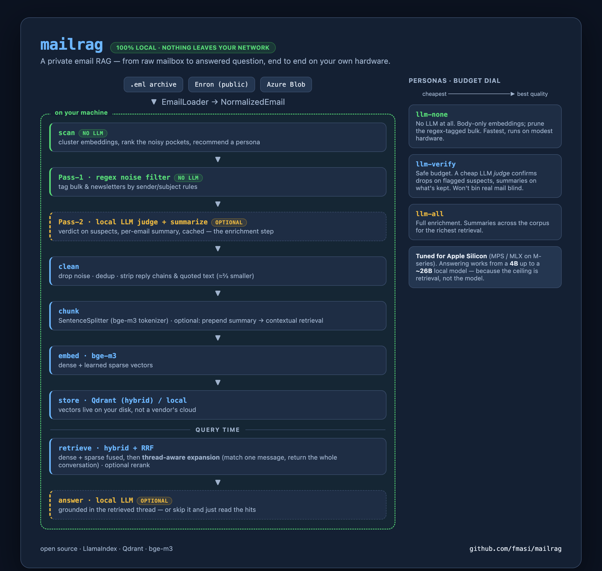

Turns a mail archive into a queryable knowledge base — hybrid dense+sparse retrieval, thread-aware answers assembled from whole conversations, optional local-LLM cleanup. Runs on your hardware, on open models, with nothing required to leave your network.
$ git clone https://github.com/fmasi/mailrag && cd mailrag $ make demo # Qdrant + a thread-aware index over 100 public Enron emails $ mailrag ask "who approved the Q3 budget, and when?" → retrieves the matching message, expands to its full thread, and answers from the whole conversation — with citations.
Making your mailbox searchable by an AI usually means handing your entire email history to someone else's servers. For your real correspondence, that's a non-starter.
So I built the opposite: an email RAG you run yourself — on your hardware, on open models, with nothing required to leave your network. And the result isn't just search — these emails are private context my own AI agents can draw on for total recall, without renting my memory to anyone. mailrag covers email; parley covers calls and meetings. Independent tools; my agents know about both and reach for whatever fits.
The flagship: match a single message, then answer from its entire conversation. Roughly doubles answer coverage (terse replies 33% → ~80%) — and it needs no LLM.
bge-m3 dense + learned sparse vectors, RRF-fused in Qdrant. Gets both the concept and the rare exact token — acronyms, IDs, reference numbers.
Reply-chain stripping, calendar-invite collapsing, noise/newsletter filtering, and exact-text chunk dedup.
Optional summarize step: a local LLM writes a per-email summary + noise judgement, content-addressed and cached so re-runs are free. Point it at a model on 127.0.0.1.
Public Enron corpus, local .eml archives, or Azure Blob — behind one EmailLoader interface, ready for live sources next.
A 360-query eval that prices every technique, controls for confounds, reports significance — and in several cases overturned the intuitive choice.
From a raw mailbox to an answered question — every stage runs on your own hardware.

Stacking the ladder — body-only → +thread expansion → +summary → +thread-aware summary, each increment individually measured — is what produces the headline:
| Metric | Plain email RAG | Full stack |
|---|---|---|
| Answer coverage@3 | 45% | 84% |
| Recall@1 | 36% | 70% |
| MRR | .43 | .78 |
Author-reported on a real ~32,000-email corporate mailbox
(all references anonymized). The public make demo reproduces the method, not
the exact figures. The full methodology — 360 synthetic queries, a calibrated LLM judge
(Cohen's κ = 0.52), confound controls, and a cross-check against the TREC Legal Track's human
judgments — is in the
case study.
mailrag is built to be one node in a private context stack — so the next steps make it easier for agents to reach, and keep its memory current:
Expose search, ask, and attachment fetch over the Model Context Protocol, so any agent — yours or a teammate's — can query your mail without touching the internals.
Move from one-time imports to incremental ingest of incoming mail, so the index stays current — a living context source, not a static snapshot.
A full-screen terminal UI for the cleanup pipeline: pick a persona, watch the funnel, and approve the calibrate gate — replacing today's prompt-by-prompt flow.